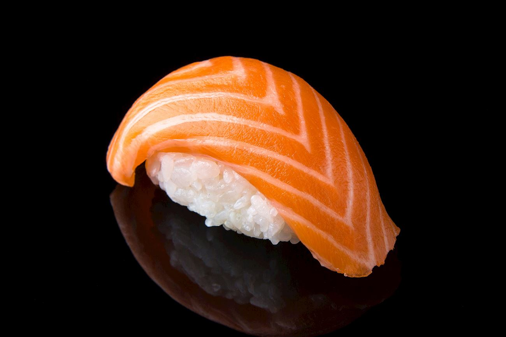

Sushi

Description
>
Japanese recipe of combining fresh raw salmon and seasoned sushi rice.
Ingredients
- Sushi grade Salmon
- Sushi rice
- Sushi vinegar
- Sugar
Steps
- Cut your salmon into long 2cm thick slices
- Cook the sushi rice
- Combine the sushi rice and sugar in a small bowl
- Mix the above combination in the cooked sushi rice
- Roll small round balls of rice
- Place piece of salmon on each ball of rice
- Eat with soy sauce and wasabi. Enjoy!